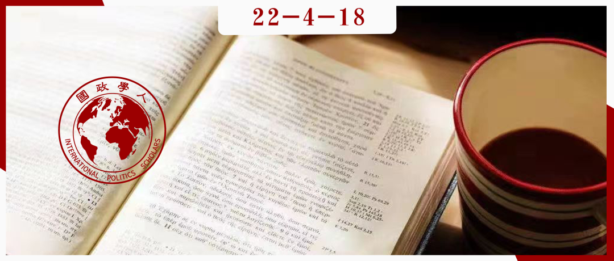

收录于合集

如何挽救国际关系理论？自反性阶段和理论化模式
作者： Stefano Guzzini，瑞典乌普萨拉大学（Uppsala University, Sweden）教授，丹麦国际研究所（Danish Institute for International Studies）高级研究员
编译： 林怡娉（国政学人编译员，外交学院国际关系专业硕士生）
来源： Guzzini S. The ends of International Relations theory: Stages of reflexivity and modes of theorizing. European Journal of International Relations. 2013;19(3):521-541. doi:10.1177/1354066113494327

导读
国际关系理论既是奠定国际关系学科地位的基础，又随着学科的专业化深入而不断更新、发展。本文旨在探讨当下国际关系理论化的问题和解决之道。文章认为，国际关系理论既源于对国际关系实践经验的学理化思考，又是理解国际关系现实的重要工具。 **然而，就目前国际关系理论的发展状况而言，以能否反映和解释现实来判断理论的效力，或是大量局限于使用 “假设—检验”（hypothesis- testing）式的理论研究，都不利于理论自身的发展。**据此，本文引入了自反性分析来回顾国际关系理论的起源和理论化的发展，提出了四种理论化模式来启发解决上述问题。文章强调国际关系理论的构建需综合考虑不同的理论化模式，对未来国际关系理论的发展具有参考意义。
摘要
国际关系理论持续受到两方面的排挤。 一方面，实践者及其专家经常认为，如果国际关系理论 不符合实践知识，则具有误导性；而当它符合时，则显得多余。 国际关系的学术研究具有提供政治判断的能力，这种能力源于对实践者历史经验的反思，并且不应超过这一范畴。另一方面，在学科范围内，国际关系理论 被还原（reduced）成一种特殊类型的经验理论（empirical theory） ，逐渐拒绝进一步的自我反思。 但本文认为，这两者都不可行。将理论简化成实践知识会产生自我矛盾；将理论还原成经验模式则低估了理论的构成功能（constitutive function）和概念的作用，并因此低估了各种必要的理论化模式。 本文在回顾国际关系理论化发展中，通过增加自反性（reflexivity）的步骤提出了上述主张，并提供了四种理论化模式： 规范化模式（normative mode）、元理论模式（meta-theoretical mode）、本体/构成论模式（ontological/constitutive mode）和经验论模式（empirical mode）。
编译
01
引言
国际关系理论学者陷入了矛盾境地。成为理论家是专业学者的核心素质，然而使用“主义（isms）”却被视为已经过时。尽管过去的大理论辩论提供了国际关系学科的核心，为不断拓展的研究领域提供共同的参考基点，并与实践世界共享话语（如现实主义－理想主义），但持续的争论和划分理论阵营却阻碍了理论发展。现在，学科核心完全被（美国）政治科学所吸收，国际关系只是公共政策研究的“外部”方面。
但本文认为上述观点缺乏根据，未能看到国际关系理论化的多种模式。 本文将介绍四种理论化模式以回应此类观点。 四种模式分别为： 规范化模式、元理论模式、本体/构成论模式和经验论模式。 尽管这四种模式并非新兴之物，但却被忽视或削弱了。首先，有观点认为学术界的抽象语言使国际关系脱离了实际。这种观点认为“真实”的知识源于长期以来针对实践的自我反思和政治判断。其次，即使是在学科领域内，部分理论家也受到了攻击。随着学科的专业化发展，“质量”的标准衡量使得研究趋于一种时而受欢迎、时而令人沮丧的同质化。
总之，国际关系理论受到了实践知识和特殊版本的经验理论的排挤，而本文旨在解决这一双重挑战。在第一部分， 本文指出尽管实践知识也是成功的理论化的一部分，但仅仅回归到实践知识完全不同于回归到理论化本身。在第二部分，本文提出进一步理解不同但同样重要的理论化模式的必要性，这些模式不能简化为经验概括（empirical generalizing）。 “我们必须把理论化视为编写有待完成的词典，而非制作烹饪书”，“词典”中越来越多的术语需要不断更新。
鉴于理论化有多种不同的模式，因此国际关系学也可以重新构建。与其看到国际关系学日益被政治科学所吸收，不如从全球政治的角度来考虑国际关系学，包括国内政治和比较政治。有鉴于此，国际关系理论并不会终结。
02
不再需要理论化——实践知识与世界政治的自我反思
无论“现实主义者”和“理想主义者”之间的争论是否真正在早期的研究领域形成了大辩论，这种简单的二分法已经构成了许多实践者的自我理解，反映出国际关系学立足的两个领域：军事和外交，前者依赖历史和政治研究，后者则依赖国际法研究。这种二分法很大程度上构成了理解国际政治的方式。基于二分法对观察理论和外交政策战略的混淆，国际政治的话语陷入了二元对立中。例如，“鹰派”是主张威慑或遏制的“现实主义者”，而“鸽派”是主张接触的“理想主义者”。
这种二元简化并非产生于科学领域，而来源于世界外交的话语。它产生于政治现实主义和理想主义之间的经典辩论，并承认实践知识的优越性。在国际关系学中，社会和政治实践的改进并非基于远距离的科学观点；恰恰相反，
只有诉诸实践教训，科学才得以形成。
本节讨论了这一特定起源对国际关系理论化的影响。 第一，展示理论的社会学和观念基础。 这一基础来源于宫廷贵族的“国际化”（the
international of Court Aristocracy）的领域和认知习惯，它们定义了欧洲外交所谈论与思考的内容。
第二，介绍学者如何将此类实践知识用于定义人文/社会科学的特殊性，表明第一阶段的自反性如何成为国际关系早期定义的关键部分。
简单起见，本节将分别通过诺伯特·伊莱亚斯（Norbert Elias）的作品、对汉斯·摩根索（Hans J.
Morgenthau）的批评以及对弗里德里希·梅内克（Friedrich Meinecke）的简略分析来介绍这一点。
2.1 ** 国际关系的遥远起源与（专制主义）宫廷政治的习惯** **
**伊莱亚斯追溯了法国宫廷贵族的领域和习惯，揭示了欧洲外交特性：它首先是一个共同体，有其观察和做事的方式，以及共享的实践知识。伊莱亚斯认为，第一，宫廷贵族是某种行为准则（他称之为“习惯”）的持有者，这种准则在宫廷的外事部门最具影响力。第二，即使中产阶级最终夺取贵族的地位（到20世纪初），他们也没有采取自己的准则，而采用了革命前贵族既有的准则，并因政治的“国有化”对这些准则进行了一些调整。
宫廷社会是宫廷外交产生的起点。在其利用军事换取自主权的能力式微的情况下，贵族依赖君主赋予的地位和财富资助，从而产生了宫廷贵族阶层及新的权力领域。政治成为宫廷社会中特殊的交往方式。在宫廷中，没有朋友，只有利益，
因此宫廷社会产生了一种完全建立在利己行为基础上的习惯——具有一贯谨慎、两面派且可能残酷无情的特质。这种习惯即“外交”，
主要存在于外事部门，但也日益出现在其他国际行为体的谈判文化中。
国际关系学者称之为“外交文化”的社会学基础。这种被摩根索称之为“贵族国际”的特殊知识显然并非通过自反性或理论化而成的。
这一外交共同体及其知识在中产阶级中得以复现。中产阶级夺权后，他们的道德准则与贵族的道德准则产生了冲突。但他们在经验最少、道德准则与现实政治之间的矛盾最突出的国际事务中却简单地沿用了贵族的习惯。然而，这种采用也产生了重大的转变，即权力政治不再适用于忠于国家的单一君主之间的王朝关系，而适用于以忠于民族的主权集体的名义建立的关系。
宫廷社会的贵族习惯因此成为了“外交文化”，其特征是利己的谨慎和国有化的权力政治。
2.2 实践知识：尝试融合政治思想和历史 **
** 国家理性的传统既是一种外交政策实践，又是对这种实践进行的第一阶段的反思结果，即在实践领域内部的反思。
在两次世界大战之间提出这一传统时，梅内克试图将实践知识作为政治的基础，反之亦然：“根据国家理性采取行动，相对较早地达到了一种类似于现代历史认知的观察和理解方式。反过来，现代历史认知也受益于国家理性，以及国家利益的教义所产生的吸引力，自17世纪以来，国家利益的参与者将其用作‘治理的艺术’的辅助性实践科学。”因此，
国家理性成为为思想史建立经验方法论的基础，而这种历史也成为政府治理艺术的精髓和本质。 **
**由于现代外交的出现与文艺复兴时期关于国家理性的话语并行发展，这两种话语实际上是一体两面的。梅内克认为欧洲均势的教义实际上是国家理性的普遍教义的细节。
然而，它首先是实践知识，并且还不是将其变成一门社会科学的尝试。
2.3 第二反思阶段的实践知识 **
**在第二反思阶段，国际关系仍然呼吁国家理性实践传统中蕴含的高级知识，未能遵循其他社会科学的科学转向方式。然而，有效性主张标准的不断变化破坏了仅基于历史经验和教训的政治判断的地位。摩根索的早期著作体现出了这种矛盾。摩根索继承了马克思·韦伯的遗产，然而最终无法遵循韦伯的科学化之路，作为实践知识的理论化陷入了困境。
如同韦伯，摩根索接触到三种不同的理论化传统：古典规范传统、实践传统和科学传统。但与韦伯不同的是，摩根索坚持实践传统的优先地位。随着社会科学的学科化发展，诉诸“历史经验”不再成为强有力的论据。因此，摩根索试图证明实践知识的箴言是一种科学理论。首先，在反对马丁·怀特“不存在国际理论”的基础上，他希望为国际理论的可能性进行辩护；其次，在反对行为主义（他将其与经济学方法、自由主义、乌托邦主义联系起来）的基础上，他希望界定国际理论必然有限的特征。
但当摩根索描述可能的国际关系理论的性质时，其观点却变成了循环论证。摩根索认为这是一种超越历史哲学的理论，因为它明确了哲学倾向的历史学家用以分析的理论假定，然后再用历史来“证明”假定的有效性：国际关系是一个复现和重复的领域，正是“这种国际政治的重复特征，即均势（balance
of
power）的格局，使得理论系统化”。因此，摩根索寻求可以通过经验建立和历史证明的规律，并在经典的均势政治中得以验证。然而，由于没有遵循和韦伯一样的科学化路径，他的方法回到了实证主义的立场上，并且无法很好地抵御行为主义的攻击。
最终，从第一反思阶段到第二反思阶段时，实践知识仍然陷入“保守”或传统困境。
实践知识不能仅仅指代“世界本来的样子”，并依靠负责任的精英对世界的实际理解。但如果以一种“理论，即客观、系统的方式”为自己辩护，那么这种自反性水平的实践知识只能采取当时的科学标准。因未能重新定义理论化本身的核心，实践知识陷入了两难境地：倘若与自身保持一致，实践知识应该避免科学辩护，但这将不再有效；倘若尝试用实证主义进行科学辩护，实践知识却不能与自身保持一致。
03
哪一种理论？哪一种理论化方式？——科学知识和世界政治观察的自我反思
本节将讨论前文述及的两种还原主义如何排挤了理论化的大部分内容。 理论不仅仅是知识的结果，还是产生知识的可能性条件。理论化必须包含这两部分。
而且并非所有知识都是由经验决定的。
实际上，应直面并分析普遍的理论假定，而不应当将它们排除在研究之外。当代许多研究设计都把理论作为研究的结果或给定的研究起点，使得理论成为研究设计的“外部”，并与方法论脱节。但理论应当是一以贯之的。本节的论证如下，
第一，尝试挽救对范式间辩论（the Inter-Paradigm Debate，IPD）的理解。
范式间辩论不一定是现实主义、理想主义和其他任何主义之间的陈腐辩论或日益激烈的地盘之争。它在观察者层面上开启了对世界政治的第二阶段的反思，而且通过探索这种世界政治观察的假定，为其自我反思和理论控制开创了平台。
第二， 在提示范式间辩论的开放性却不拘泥于范式之争的基础上，
本节提出四种理论化模式，这四种模式界定了包括国际关系在内的所有社会科学领域的特征。 这些理论化模式反过来要求我们
基于“概念”来组织我们的核心科学对话 ，这些概念将用于更新“未完成词典”中的知识。
3.1. 重新审视“范式间辩论” **
**国际关系的范式间辩论（指国际关系理论的第三次辩论）已经被束之高阁，或沦落为标准教科书的展示内容。但这种辩论形式过于狭隘贫瘠，只是学者们互抛不同的主义而已。更糟的是，这些主义不时被解读为意识形态，不得不适应保守主义、自由主义或任何形式的激进主义。在只能容许一个真理存在的科学领域，范式间辩论也只能产生一个赢家。而当理性无法决定胜负时，只能归咎于价值观。理论的多元性持续时间越长，斗争就越激烈。最终学者们只能采取某种折衷主义来休战。
但这并非范式间辩论的支持者所希望的，他们视辩论为一种解放运动，将产生丰富的多元主义理论。国际关系的理论化因既有的对世界政治的理解方式而陷入僵局，需要与社会和历史方面的变化“达成妥协”。此外，由于理论可能因缺乏证据而论证不足，不可能找到一个单一的获胜的理论。据此，“范式间辩论”认为，
只有国际关系开始对理论的基本假设，以及这些假定如何构成对研究主题、问题和技术的理解进行第二阶段的理论化， 才能应对僵局，并使研究富有成果。
尽管“主义”之间的辩论可能不再构成国际关系学科辩论的核心，但它们仍然是学科的背景。
这场辩论的核心贡献是认真对待理论的构成功能，即将理论视为产生知识的可能性条件 ，因此超越了行为主义第一次将实践知识转化为一门科学的尝试。
在单一真理的斗争中，把主义从核心中剔除是可以理解的，因为这样的背景使辩论几乎不可避免地变得教条化。然而，众所周知，
范式间辩论既需要寻求连贯性，又需要自我批评和包容性 ，因此，范式间辩论具有对自反性理论化的需求。
3.2 四种理论化模式 **
**本节介绍四种理解范式间辩论的理论化模式。这些理论化模式相互联系，其关联对任意一种理论化形式都至关重要，因而任何科学都不能忽略其中之一。在理论化模式下对范式间辩论进行拆解，有助于发现更多跨范式协作和相互学习的组合与可能性。
规范化模式 （Normative theorizing） 将道德和政治哲学的科学标准运用于国际关系问题
，因此不仅分析世界政治中的伦理问题，而且在其中采用了哲学论证的规则。它并不意味着规范问题能够从哲学上得到回答，但却 对实质性的道德论证方式施加了规则
。鉴于所有政治都与价值观有关，规范化模式对政治分析的重要性不言自明。
元理论模式 （Meta-theoretical theorizing） 为所有理论构建奠定了基石
，包括：本体论、认识论和方法论，以及影响方法论的对时间性质的假定（线性的或分层次的）或对历史的理解。
元理论模式批判地检验现有理论构建基于的假定的一致性，能够展示假定在哪部分发生冲突，以及因此哪部分的理论构建是不连贯的
。但是，当学者们首先需要阐述他们的理论时，也可以积极地使用元理论模式，特别是在本体论的理论化方面。
本体论模式 （Ontological
theorizing）在某种意义上是规范的，但却和规范化模式不同。理论化的实际目的不在于建立共同利益（common
good）的理论，也不一定与价值观的研究有关。实际上，这正是社会理论摆脱道德哲学时期的那类理论化。它
关注核心概念，因为核心概念代表着研究伊始的重要问题，涉及对“国际”的理解
，包括无政府状态、等级制度、他律（heteronomy）、社会、共同体等等概念，以及基本和次级的概念，如主权和国家。理论化概念获得更普遍的理解显然与经验分析有关。然而，本体论模式没有停留在经验层次，通常见诸主要关注理论化构成功能的分析框架或类型学。
经验论模式 （empirical theorizing）更多地是指 归纳驱动的研究议程 。这些可能涉及大n相关分析（large-n
correlational analyses，通常导致演绎假设检验），小n比较（small-n
comparisons），个案研究法和归纳法。但是，经验论模式也能够以较小的单元为特征，这些单元可以从完全的案例导向研究转移到其他研究，即社会/因果机制。
尽管不同的理论化模式有其不同的理论化目标，但它们之间也相互联系并常常相互影响。如果缺失了理论化逻辑的任一部分，或者我们不尝试打破专业化常规，以遵循理论化模式各自成果之间的关联，就无法确切地理解世界政治。
3.3 未完成的“国际”概念词典 **
** 认真对待理论的构成功能并在研究领域中采用不同的理论化模式，突出了“概念”及其解释在科学交流中的重要性。
概念是理论的构成部分，也是在理论化过程中使用、并藉由理论化而产生的词汇。概念是实现理论化的手段，理论化也是重新定义概念的途径。这种观点意味着更广泛地理解“概念分析”。最近，概念分析的作用得到了更广泛的承认，但却有集中于技术亦即定义方面的倾向，
从而忽视了任何概念分析所必需的社会－历史（social-historical）和语义方面的自我反思。 概念有其历史，
了解概念的持续历史不仅是一种手段，也是理论对话的目的，因为概念正是积累知识的宝库 。
反过来， 更广泛地理解概念的作用也影响着概念分析的方式
。我们不能工具性地出于编码目的而定义术语，而不顾其历史和更宽泛的用途。但反对工具主义同样不能使概念分析走向本质主义（essentialist）。并不是深入挖掘一个概念的含义和功能的历史，就能找到概念的“本质”。
不能脱离语义语境（semantic context）和语用（pragmatic
use）来思考概念，它们是语义关系的一部分，因此概念分析不可避免地需要在语义网络中完成 。
因此，概念词典不仅仅是分析的工具，并且具有多种类型。概念类型可以包括在理论化模式的演变过程中的特定现象的引用（如，规范化模式的“权利”或本体论模式的“国家”）、元理论类别（如，个体主义）、操作性的概念（如，标准操作程序）、经验机制（如，社会化），甚至是微观理论或理想类型（如，民主和平）。
这些概念及其讨论也构成了概念词典的内容。任何有关领域核心的讨论都涉及什么对于理解真实的国际关系最为重要。对此，该词典与“国际”概念的本体论相关。解读和丰富这一概念内容的方式颇多，而在本文作者的研究中，国际关系中的“国际”关乎“全球政治”，重点关注包括客观规则在内的权力和治理。
04
结论
实践化模式或狭隘的科学模式都无法公正地看待国际关系理论化的实质和目标。
前者的错误在于限制了观察实践的能力。实际上，既有的实践知识中被视为理所当然的部分本身就需要永久性的反思。而倘若需要引入科学知识，理论化必须考虑到理论的构成功能和工具功能，从而考虑到不同的理论化模式。
本文建议区分四种必需且相互关联的理论化模式： 规范化模式、元理论模式、本体论模式和经验论模式。
概念通过联系不同的理论化模式来发挥特殊的作用，即提供共同的话语（及相应的译文），使其中的知识得以进步。
一些国际关系专业院校的教学非常不利于理论学习。这些院校希望同时对实践知识和科学知识进行自我反思，综合两者优点以更好地进行理论教学。为此，它们不仅需要
提供真实的知识 ，还需要 培养学生在面对新的决策情况时应具备的自我反思和适应性的能力 。这种能力最好通过 关注理论构成功能的理论课程
来获得。
明确实践知识和科学知识之间的区别，关注更丰富的理论化模式，不仅可以突出理论的核心地位，而且有助于重新思考其与国际关系惯例和跨国实践之间的关系。
词汇整理
自反性 reflexivity
范式间辩论 the Inter-Paradigm Debate (IPD)
审校 | 董诗 陈思涵
排版 | 苏伊文 臧泽华
文章观点不代表本平台观点，本平台评译分享的文章均出于专业学习之用,
不以任何盈利为目的，内容主要呈现对原文的介绍，原文内容请通过各高校购买的数据库自行下载。
国政学人
支持学术公益与知识传播
微信扫一扫赞赏作者 __赞赏
已喜欢，对作者说句悄悄话
取消 __
发送给作者
发送
最多40字，当前共字
上一页 1/3 下一页
长按二维码向我转账
支持学术公益与知识传播
受苹果公司新规定影响，微信 iOS 版的赞赏功能被关闭，可通过二维码转账支持公众号。